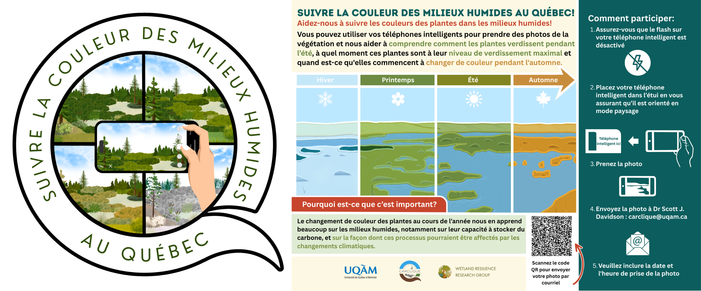
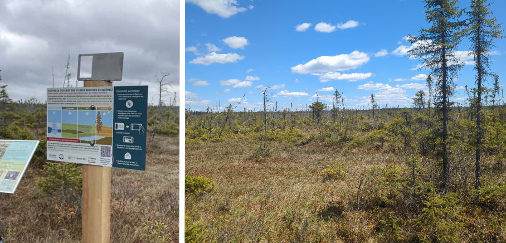
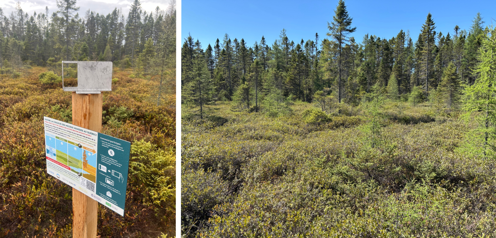
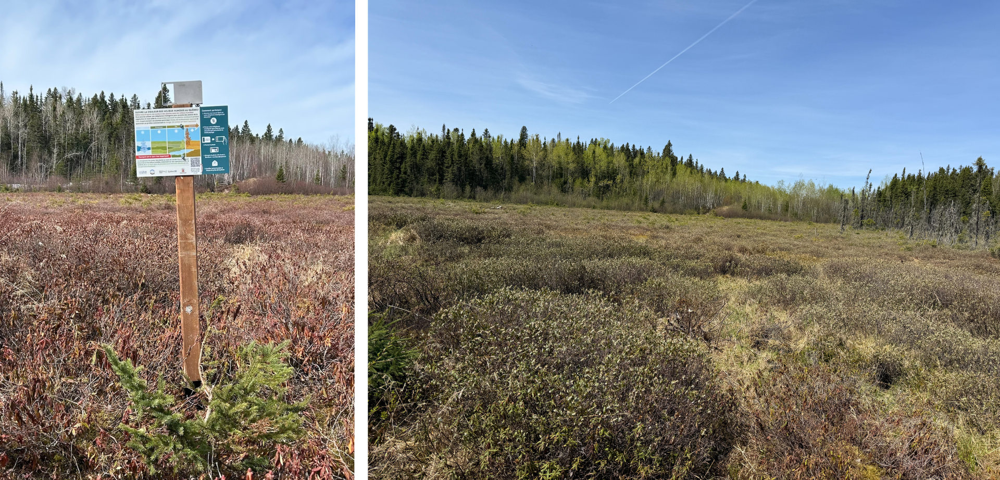
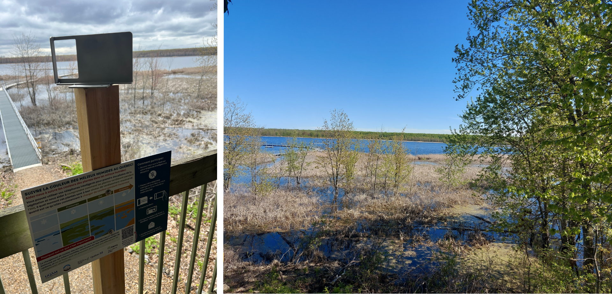
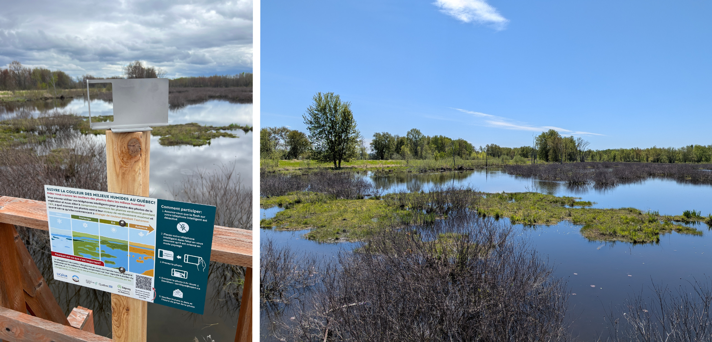
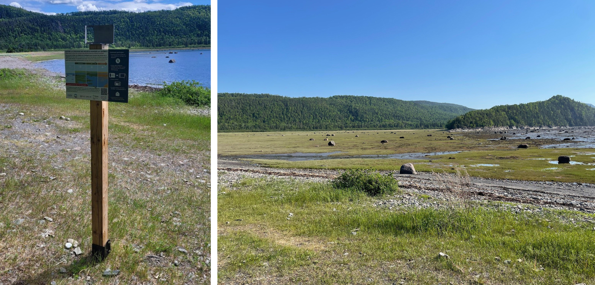

Suivre la couleur des milieux humides au Québec
Ce projet est réalisé dans le cadre de la Chaire de recherche CARCLIQUE, financée par le gouvernement du Québec dans le cadre du Plan pour une économie verte 2030.
À chaque visite d’un site, prenez une photo du milieu humide à partir d’un point de vue fixe à l’aide de l’un de nos supports pour téléphone spécialement conçus, puis envoyez-nous votre photo. Ensemble, nous pourrons suivre l’évolution de la couleur des milieux humides tout au long de l’année.

Voyage à travers les milieux humides du Québec
Découvrez les paysages, les équipes de terrain et les milieux humides qui rendent ce projet possible. Ces images offrent un aperçu du travail réalisé partout au Québec pour suivre les changements de couleur des milieux humides au fil des saisons.
/
Détails du site
Québec
Parc national de Frontenac
Emplacement : Québec, Canada
Type de milieux humide : tourbière ombrotrophe
Coordonnées : 45.969667, -71.150944
Partenaires du projet de recherche : Sepaq
🌐 Informations sur le site
🗺 Voir sur la carte

Parc écoforestier de Johnville
Emplacement : Québec, Canada
Type de milieux humide : tourbière ombrotrophe
Coordonnées : 45.346917, -71.738167
Partenaires du projet de recherche : Université de Sherbrooke, Université Bishop’s, Nature Cantons-de-l’Est
🌐 Informations sur le site
🗺 Voir sur la carte

Opitciwan
Emplacement : Québec, Canada
Type de milieux humide : tourbière ombrotrophe
Coordonnées : 48.663417, -74.944167
Partenaires du projet de recherche : Conseil des Atikamekw D’Opitciwan

Marais de la Rivière aux Cerises
Emplacement : Québec, Canada
Type de milieux humide : tourbière minérotrophe
Coordonnées : 45.275972, -72.165611
Partenaires du projet de recherche : Marais de la Rivière aux Cerises
🌐 Informations sur le site
🗺 Voir sur la carte

Parc national d’Oka
Emplacement : Québec, Canada
Type de milieux humide : marais
Coordonnées : 45.487472, -74.007417
Partenaires du projet de recherche : Sepaq
🌐 Informations sur le site
🗺 Voir sur la carte

Parc national du Plaisance
Emplacement : Québec, Canada
Type de milieux humide : marais
Coordonnées : 45.594778, -75.086722
Partenaires du projet de recherche : Sepaq
🌐 Informations sur le site
🗺 Voir sur la carte

Maskinongé
Emplacement : Québec, Canada
Type de milieux humide : marais
Coordonnées : 46.180212, -73.038257
Partenaires du projet de recherche : Canard Illimités Canada
🌐 Informations sur le site
🗺 Voir sur la carte

Parc Écomaritime de l’Anse-du-Port
Emplacement : Québec, Canada
Type de milieux humide : marécage
Coordonnées : 46.253427, -72.640365
Partenaires du projet de recherche : Nicolet
🌐 Informations sur le site
🗺 Voir sur la carte

Parc national du Bic
Emplacement : Québec, Canada
Type de milieux humide : marais salé
Coordonnées : -68.779567, 48.3599747
Partenaires du projet de recherche : Sepaq
🌐 Informations sur le site
🗺 Voir sur la carte
